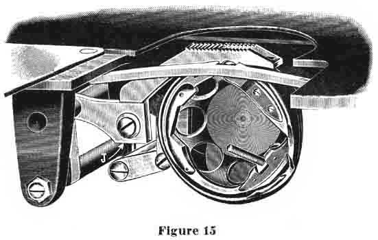
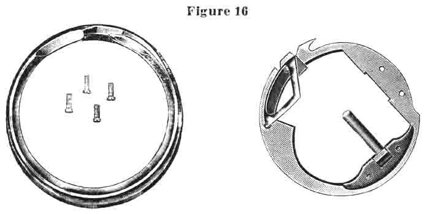
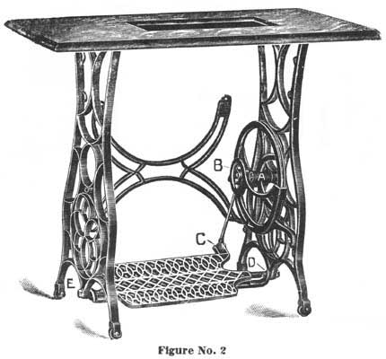

ONLINE MANUALS SECTION
INSTRUCTIONS FOR USING THE
ELDREDGE TWO SPOOL
SEWING MACHINE
INSTRUCTIONS FOR EMBROIDERING
Initial or pennant work may be made by using full sized wool zephyr yarn or three or four colors of darning cotton, in place of the lower thread, (upper thread äs usual). In order to do this work without changing either tension of the machine, we recommend winding the yarn on a No. 50 empty spool. Place this spool on the spool winder and wind the yarn on the spool in accordance with instructions on page 11. To thread the spool case with this zephyr yarn, take the case in the left hand and the spool in the right hand. Insert the end of the yarn outward from the inside of case through the slot, across the outside of case and over (not under) the tension spring, then downward from the outside of the case through the hole, and bring this end out again from the inside of the case through the hole, leaving about three inches of thread projecting that the upper thread can pick it up. (Important. Do not place spool in case until you have threaded case as above instructed.) Be sure that the yarn is on the outer side of tension spring. If there is any slack yarn, it should be wound up on the spool. Then put spool in case, using care to see that none of this yarn is wrapped around the spindle, in the center of the spool case, onto which the spool slips. You may now proceed to embroider, the same äs in doing regular sewing, setting the stitch regulator for any length stitch to suit the class of work desired. The letters or patterns should be stamped with a tracing wheel on the wrong side of the goods, which, in doing this work, is the upper side of the goods, the design in yarn appearing on the under side, as the machine operates.
The above instructions apply when using smaller yarns. When using heavier
yarns thread to No. 6 only, omitting No! l and No. 5.
TO RAISE OR LOWER THE FEED
|

|
|
The feed is attached to feed bar by means of screw
"J" (figure 15). In order to raise or lower the feed, first
raise the presser foot so that it will stand free of the feed. When
loosen screw "J", which will allow the feed to be raised or
lowered as desired. To determine if feed is at proper height, turn hand
wheel until the take-up is at highest point. With the take-up standing
in this position, the feed points should protrude through the needle
plate just the length of these points.
|
THE HOOK POINT AND HOOK RACE
|

|
|
The above illustration shows the different parts of
the hook mechanism, not assembled. If the hook race is taken out of
the hook, be sure to wipe it clean and put a few drops of oil into it
before screwing on the hook plate to fasten the race in position.
|
TO CHANGE THE SELF-SETTING NEEDLE
TO REMOVE the needle, raise the needle bar to its highest point, loosen the needle clamp screw by a slight turn toward you and slip the needle down until it is free.
To set the needle, take it in the left hand, placing the point through the
hole in the needle plate and then pass the needle up into the bar. In doing
this, be sure that the needle is pushed up as far äs it will go and that
the long groove of the needle is on the left side and the short groove and
flattened shank are to the right.
THE PRESSER FOOT
THE pressure of the foot, as the machine is sent out from the factory, is correct for ordinary sewing, but can be graduated by the presser bar screw, (see No. 2, figure l, page 2) turning this presser bar screw to the right or downward, for more pressure, or to the left or upward for less pressure. The pressure on this foot, as the machine is sent out from the factory, will not need changing, even for very light work. It may be necessary to increase the pressure for extraordinarily heavy work. If the pressure is too heavy when sewing thin goods, the feed will cut the goods.
The presser foot must be set so that the needle passes midway between the two prongs. If the foot is set a little to one side or the other, it is likely to push the needle out of its proper place and make it strike the needle plate, thus blunting the needle or cutting the upper thread.
The presser foot is raised by means of the lever directly back of the face plate. This is called the presser bar lifter and is operated by raising it up to its full height until it slips into place. To lower the presser foot, reverse this action.
To remove the presser foot, raise the presser bar lifter and loosen the knurled hub nut which holds presser foot in place.
Avoid pushing and pulling the goods while stitching, particularly the latter.
This is usually the cause of broken needles, due to the fact that the operator
will grasp the goods after it has passed over the feed and pull it, with the
idea of aiding the feed. If the goods stretches or slips a little, it will
be apt to carry the needle with it, that is, bend it a trifle out of its proper
position, so that it will strike the needle plate and either bend or break.
Be particularly careful to avoid either pushing or pulling the goods, as the
feed will carry through any class of material without aid.
SEWING GUIDE
WITH each machine is furnished a Sewing Guide, together with thumb screw. This guide is fastened to the bed of the machine by means of the thumb screw, as indicated by letter "S", (figure l, page 2.)
REMOVING THE WORK
T O REMOVE the work, stop the machine with the needle out of the goods and
with the take-up lever at its very highest point. This is Important.
Raise the presser foot with the presser bar lifter, located at the back of
the face plate. As this is done, the Automatic Tension Release comes into
action and releases all tension on the upper thread. Next draw the work backward
away from the presser foot. Then bring both threads over from the back and
cut them with the blade of the thread cutter which fits into the presser bar.
THE BELT
THIS machine works best with as loose a belt äs can be used without
slipping on the belt wheels. If the belt is too loose, disconnect the coupling
and cut off a little from one end, say half an inch. The large drive wheel
on the stand has a close fitting wheel guard which holds the belt always in
position on this wheel. When you desire to turn the sewing head back for oiling
or cleaning, simply slip the belt off of the upper pulley on outside of hand
wheel.
SKIPPED STITCHES
THESE are sometimes caused by using a needle too small for the thread, using
a bent needle, or by the improper setting of the needle. In setting the needle,
the long groove must, be turned toward the left, the flat shank toward the
right and the needle must be pushed up into the needle bar äs far äs
it will go, and secured firmly by the needle clamp.
BREAKING THE UPPER THREAD
THIS may be caused by improper setting of the needle, using a needle with
a sharp or imperfect eye, the thread uneven or too large for the needle, the
upper tension too tight, or by improper threading of the machine. It is important
that the needle pass directly between the prongs of the presser foot and through
the hole in the needle plate, without rubbing. If the needle rubs against
the presser foot or the sides of the needle plate hole, there is danger of
breaking the upper thread.
BREAKING THE LOWER THREAD
THIS may be caused by having too much tension on the spool case or through the improper threading of this spool case. It is also possible if the end of thread from the spool case is allowed to be caught in the spool case cover, or if there is any slack thread in the spool case which may become wound around the spindle (letter "K", figure 10, page 8.)
TO OIL AND ADJUST THE STAND
|

|
|
THE Stand should be oiled in five places. which are
indicated by the letters A, B, C, D and E on the above cut. "A"
marks the wheel stud bearing. ".B" marks the pitman stud bearing
at upper end. "C" marks the lower end of pitman. "D"
and "E" mark the treadle center screw bearing.
To adjust the belt wheel, loosen the lock nut at end of wheel stud on outer side of leg. With a large screw driver, turn the wheel stud to the left until the lost motion is taken up, then tighten the lock nut securely The adjustment should be made with the belt removed. To adjust the pitman, turn the small screw at the top of pitman head so the right until the lost motion is taken up, or if the lost motion is at the bottom at the treadle connection, loosen one of the nuts and turn the headless center screw to the right until the required adjustment is made, then tighten the lock nut securely. To adjust the treadle, loosen the lock nut on the outer side of leg at the bottom and turn the headless center screw to the right slightly, then the lock nut. |
Part One | Part Two | Part Four